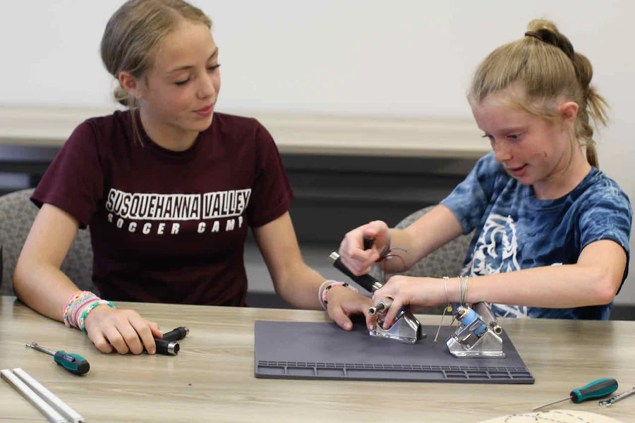
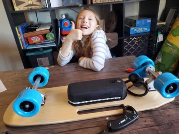
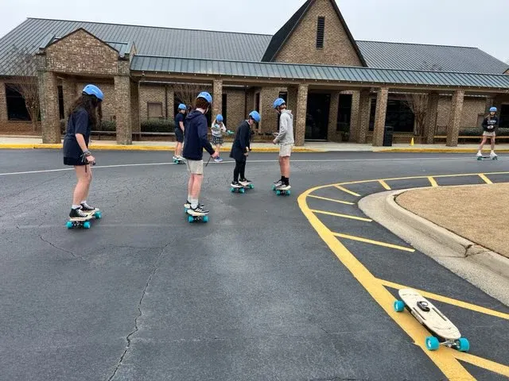

Learn and Build Your E ride based on STEM Project
Courses For Joining
Middle School STEM Project Based Learning
Our Middle School STEM Program introduces students to hands-on learning through a STEM Project Based Learning approach. Participants will build an electric scooter using our DIY Electric Scooter kit — a perfect blend of creativity, engineering, and fun. This STEM learning project is designed to demonstrate what STEM Project Based Learning is all about, offering real-world applications of science and technology. Discover STEM Project Based Learning activities that inspire innovation, such as designing the best electric motor scooter and understanding how to build a scooter from the ground up. With integrated STEM education to project based learning, students gain essential 21st-century skills while building something exciting and functional. Book demo
Book demo

High School STEM Project Based Learning
Our High School program enhances critical thinking through STEM Project Based Learning by empowering students to build electric scooters and electric skateboards. This STEM learning project integrates science, math, and engineering as students assemble the best electric motor scooter using our DIY Electric Scooter kit. Explore STEM project based learning activities tailored to real-world problem solving, helping students understand what is STEM Project Based Learning through hands-on creation. A great start to integrated STEM education with exciting, build-your-own scooter experiences.College-Level Integrated STEM Education
In our College STEM course, students tackle advanced engineering challenges through STEM Project Based Learning modules. Using DIY Electric Scooter kits, learners will build a scooter from the ground up while exploring STEM project based learning ideas and innovations in e-mobility. This hands-on approach not only explains what is STEM Project Based Learning but also develops real-world skills through integrated STEM education to project based learning. Design your future by creating the best electric motor scooter using industry-standard tools and guided curriculum. Book demo
Book demo
Learn with us and build with us
STEP 1: Learn
Discover core STEM concepts such as motion, mechanical engineering, electric mobility, and sustainability. Our curriculum uses real-world challenges—like building a DIY electric scooter or the best electric motor skateboard—to make STEM learning fun, hands-on, and deeply engaging. With a focus on integrated STEM education and project based learning, students gain practical skills .
STEP 2: Build
All parts and tools are included—just open the box and start building your own electric ride! Our comprehensive, step-by-step tutorial empowers students to assemble their DIY electric scooter kit or electric skateboard kit independently, at their own pace. This hands-on STEM project based learning experience makes engineering fun, accessible, and educational for students of all levels.
STEP 3: Ride
Take pride in riding what YOU built with your own hands! Transform your creation into a real-world learning experience by conducting engaging experiments on speed, electric energy, battery efficiency, and motor performance. This is more than a ride—it's a complete STEM learning project that blends fun with meaningful, hands-on education.
How STEM used in E ride building
Electric ride building is an exciting way to explore STEM Project Based Learning. From concept to creation, students apply engineering, mathematics, and scientific thinking while working hands-on with real components. Whether it’s a DIY Electric Scooter or a skateboard, the process teaches valuable problem-solving and technical skills, helping students understand what STEM Project Based Learning truly looks like in action.
- Understand gear ratios, torque, and motion with real-world engineering problems.
- Use technology and circuits to control motor functions and battery management.
- Apply math skills for calculating speed, distance, and energy efficiency.
- Engage in STEM Project Based Learning activities to encourage critical thinking and innovation.
- Explore integrated STEM education that blends creativity with technical know-how.